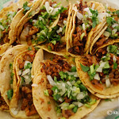

Taquería Taco - Keto
Give me tacos, or give me death. Add in a few el Pastor with guac and diced onions. TACOS!! It’s a wonderful morning for breakfast tacos. These tacos are lit 🔥. Can you put some peppers and onions on that? It’s raining tacos, from out of the sky, tacos, don’t even ask why. TACOS!! Tacos for breakfast, lunch and dinner. Burritos are very tasty. Tacos, again? This will be 5 times this week and it’s only Tuesday. 50 cent tacos! I’ll take 30.
Tacos al pastor. Nuestra receta secreta de tacos al pastor. Orden de 5 tacos en $45 pesos.